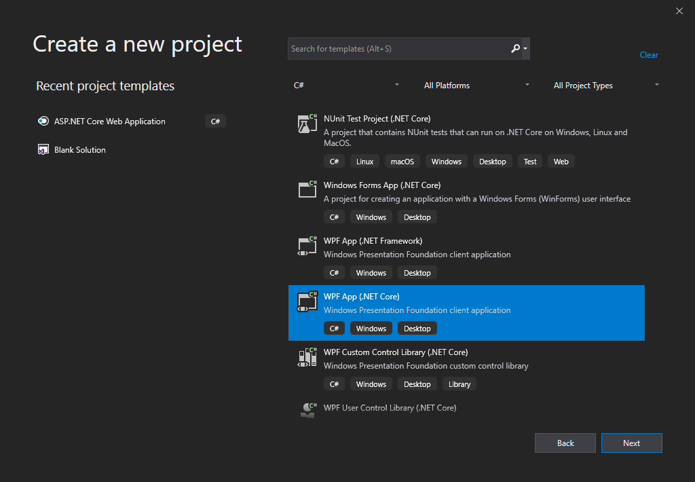
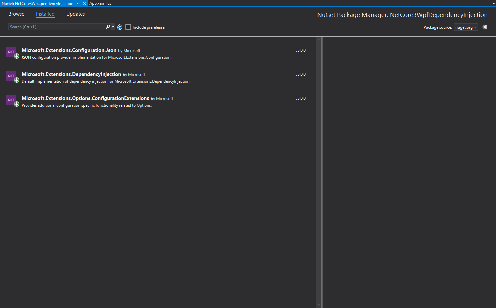

https://www.cnblogs.com/muran/p/11759899.html
前言
我们都知道 .NET Core 提供了对依赖项注入的内置支持。我们通常在 ASP.NET Core 中使用它（从 Startup.cs 文件中的 ConfigureServices 方法开始），但是该功能不限于此框架，我们可以在 WPF 和 Windows Forms 应用程序中使用它。
实践
新建项目

将所需的 NuGet 包添加到项目中
- Microsoft.Extensions.DependencyInjection
- Microsoft.Extensions.Options.ConfigurationExtensions
- Microsoft.Extensions.Configuration.Json

然后，将一个名为 appsettings.json 的文件添加到项目的根文件夹。将其“构建操作”属性设置为“内容”，将“复制到输出目录”设置为“ 复制”（如果较新）
1
2
3
4
5
| {
"AppSettings": {
"AppName": "SampleNetCore3WpfDependencyInjection"
}
}
|
创建一个 AppSettings.cs 文件来保存配置设置。该文件将映射我们在 appsettings.json 中编写的设置
1
2
3
4
| public class AppSettings
{
public string AppName { get; set; }
}
|
创建一个示例服务
1
2
3
4
| public interface ISampleService
{
Task<string> GetCurrentDate();
}
|
1
2
3
4
5
| public class SampleService : ISampleService
{
public async Task<string> GetCurrentDate() =>
await Task.FromResult(DateTime.Now.ToLongDateString());
}
|
然后像往常一样在 IOC 容器中注册服务：
1
| services.AddScoped<ISampleService, SampleService>();
|
打开 App.xaml 文件并删除 Application 类的 StartupUri 属性。然后，我们需要重写 App.xaml.cs 中的 OnStartup 方法
1
2
3
4
5
6
7
8
9
10
11
12
13
14
15
16
17
18
19
20
21
22
23
24
25
26
27
28
29
| public partial class App : Application
{
public IServiceProvider ServiceProvider { get; private set; }
public IConfiguration Configuration { get; private set; }
protected override void OnStartup(StartupEventArgs e)
{
var builder = new ConfigurationBuilder()
.SetBasePath(Directory.GetCurrentDirectory())
.AddJsonFile("appsettings.json", optional: false, reloadOnChange: true);
Configuration = builder.Build();
var serviceCollection = new ServiceCollection();
ConfigureServices(serviceCollection);
ServiceProvider = serviceCollection.BuildServiceProvider();
var mainWindow = ServiceProvider.GetRequiredService<MainWindow>();
mainWindow.Show();
}
private void ConfigureServices(IServiceCollection services)
{
services.Configure<AppSettings>(Configuration.GetSection(nameof(AppSettings)));
services.AddScoped<ISampleService, SampleService>();
services.AddTransient(typeof(MainWindow));
}
}
|
MainWindow 简单布局及代码改造
如上所述，MainWindow 位于 IOC 容器中。因此，当我们从服务提供商处获得服务时，它将自动注入所有必需的服务（如果有）。
1
2
3
4
5
6
7
8
9
10
11
12
13
14
15
16
17
18
19
20
| public partial class MainWindow : Window
{
private readonly ISampleService sampleService;
private readonly AppSettings settings;
public MainWindow(ISampleService sampleService, IOptions<AppSettings> settings)
{
InitializeComponent();
this.sampleService = sampleService;
this.settings = settings.Value;
}
private async void Button_Click(object sender, RoutedEventArgs e)
{
var serviceData =await sampleService.GetCurrentDate();
var settingsData = settings;
TextBox1.Text = $"serviceData:{serviceData}{Environment.NewLine}settingsData:{settings.AppName}";
}
}
|
Demo 地址
https://github.com/xhanb/NetCore3WpfDependencyInjection

{kind=link}
{kind=link}
{kind=link}